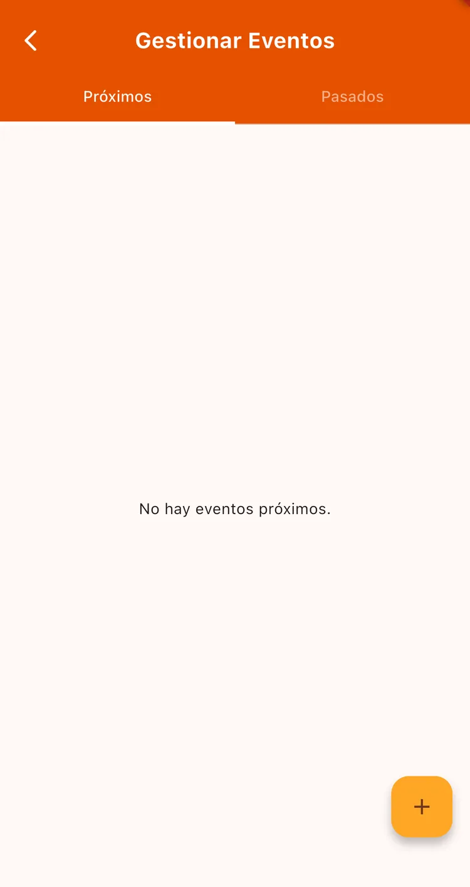
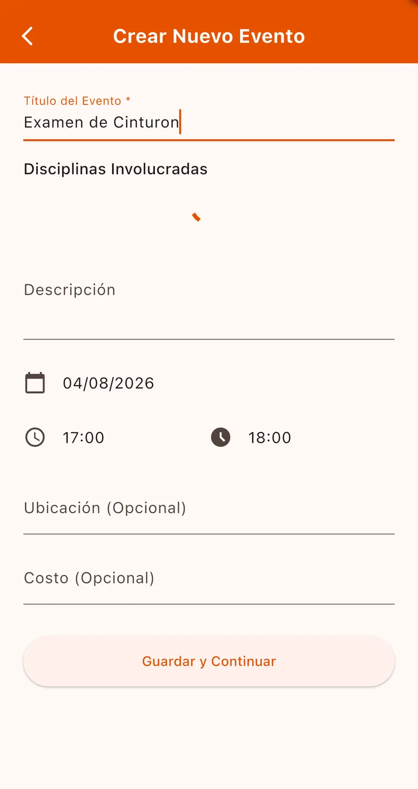

¿Para qué sirve?
Sirve para exámenes de cinturón, seminarios, competencias o cualquier actividad fuera de la clase regular. Invitás a los alumnos desde la app, les llega la notificación y vos ves quién confirmó — sin listas de WhatsApp.
Antes de empezar
- Tener alumnos activos en la escuela.
Paso a paso
Creá el evento
Andá a Gestión → Gestionar Eventos y tocá + para abrir Crear Nuevo Evento.

Completá los datos
Título del Evento, las Disciplinas Involucradas (al menos una), la fecha y el horario de inicio y fin.
La ubicación y el costo son opcionales — útiles para un seminario con cupo pago.

Invitá a tus alumnos
Al guardar, la app te lleva a elegir a quién invitar. Marcá los alumnos y guardá: a cada uno le llega una notificación.
eve-invitar
Seguí las confirmaciones
Entrá al evento y vas a ver la lista de invitados con su estado. Así sabés cuántos van a venir antes del día.
eve-detalle
Cuando un alumno confirma que va a un evento, gana Nivel de Poder. Es un incentivo extra para que participen.